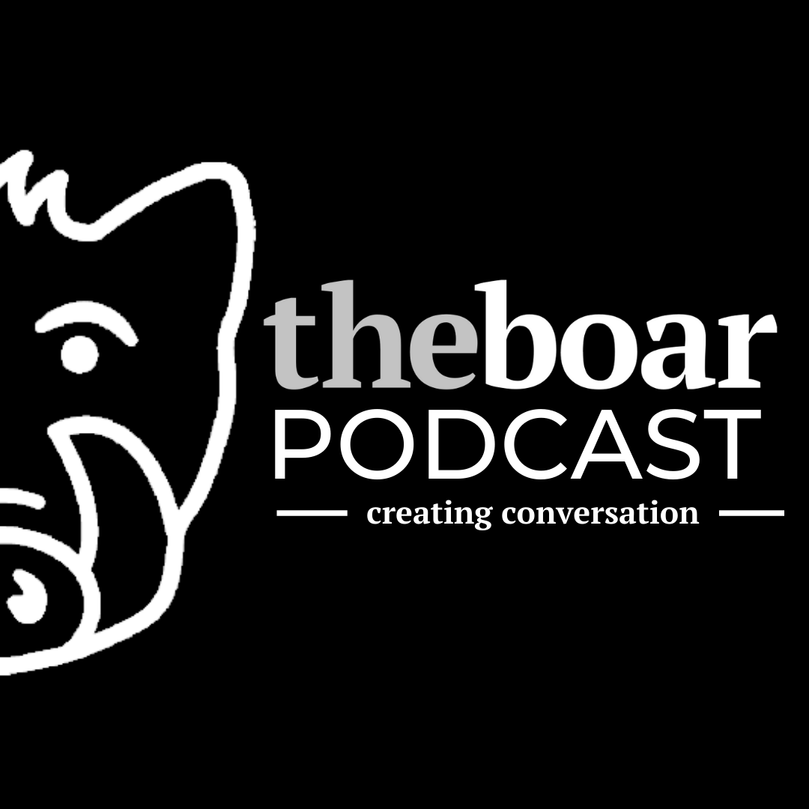

I was voted as the Head of Multimedia while at university for their student publication The Boar. I was in this role from April 2020 - May 2021. I was responsible for video editing, management of The Boar YouTube channel, management of "Creating Conversation" podcast, photography of key events on campus, and social media asset creation. While in the role, I hired two deputies to be a part of the Multimedia team.
While I was Head of Multimedia, more YouTube videos were uploaded to the publication's YouTube channel than any other Multimedia Head. The most viewed video on the channel while I was Head was a film reveiw with 1,900 views. I was responsible for writing copy for all descriptions and titles, tagging, and communicating with the associated team resposible for the video to coordinate video release and promotion on socials. I oversaw the release of all videos released after April 2020 (first video was Spoilercast) until May 2021 (last video was Stardust discussion).
I helped the Co-Editors-in-Cheif set up the publication's podcast "Creating Conversation". I edited all episodes of this audio-only podcast, distributed it to Spotify through Anchor (now Spotify for Podcasters). I also created promotional social media content for the podcast using Canva. I managed all back-end responsibilities, including editing, tagging (SEO), and writing the descriptions on all episodes.
I made the image for this front cover of the physical copy of The Boar. The publication would publish online articles, somweof which would be selected for the then fortnightly physical paper. Sadly, due to the Covid-19 Pandemic, The Boar was only able to print three physical papers during my time as Head of Multimedia. This cover's image was made with Canva.